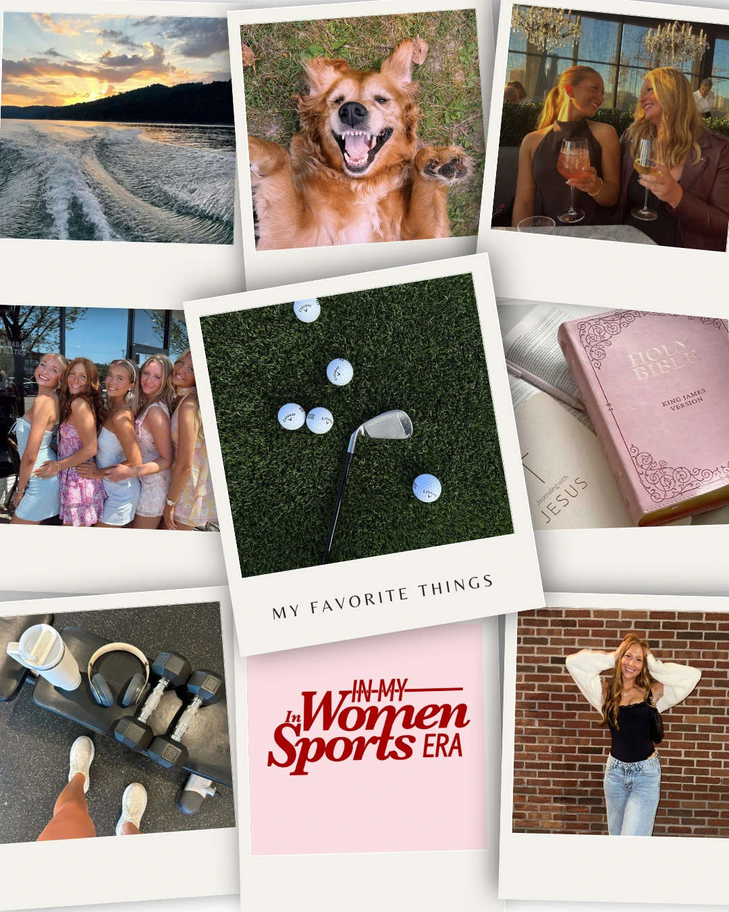

About Me
Hey! I’m Brianna Wille. I love staying active and spending time with the people I care about most. Some of my favorite things to do are going to the gym, hanging out with family and friends, being outdoors, and spending time boating in the summer.
A few fun facts about me: my favorite food is dark chocolate, and I absolutely love the color pink, which you can probably already tell!
Thanks for checking out my portfolio — I hope you enjoy exploring my work and getting to know me a little better!
Artist Statement
My work explores the evolving world of digital marketing and visual communication, where graphic design and social media intersect with creativity and strategy. I am drawn to the way digital art shapes how people perceive brands, trends, and messages in everyday life. I aim to create visuals that are engaging, intentional, and emotionally resonant with audiences while balancing artistic expression with clear communication.
My creative practice spans a range of digital media, including digital illustration, photography, video, and graphic design. I enjoy experimenting with different styles and allowing each project to develop its own visual identity. Much of my work leans toward futuristic and surreal aesthetics because I am inspired by the energy, emotion, and imagination they communicate. I enjoy creating visuals that feel bold, immersive, and slightly unreal, using high-energy compositions and bright color palettes to capture attention and leave a lasting impression. At the same time, I also explore minimalist design, focusing on clean lines, simplicity, and clarity to communicate ideas in a more subtle and refined way.
The meaning behind my work centers on connection and impact. Whether I am designing social media graphics, illustrations, branding materials, or digital campaigns, my goal is to create work that captures attention while delivering a clear message. Designing allows me to combine creativity with purpose, blending visual storytelling and strategy to connect with audiences in meaningful ways. Through my portfolio, I hope to showcase my versatility as a digital artist and my passion for creating thoughtful, engaging, and visually compelling design experiences.
